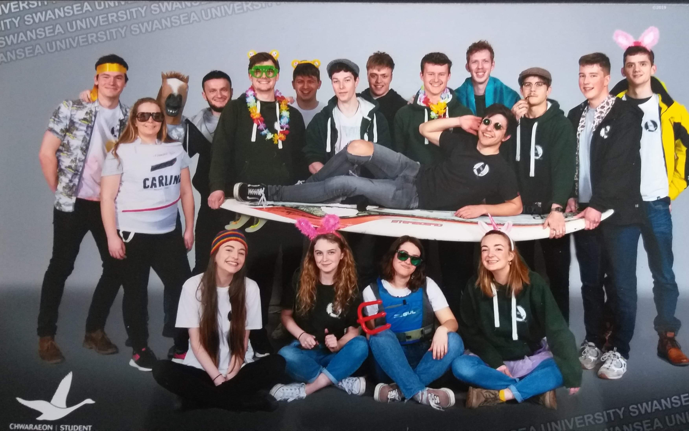

Club Info
A Club for All
SUWC provides an opportunity for students and non-students to take their first steps into the sport of windsurfing as well as giving top class shredders a platform to continue to grow and enjoy all that South Wales has to offer. We run regular Wednesday sessions, free for first timers, which include kit hire, tuition and safety cover.
What the club offers:
Below are a few things the club has to offer. We have plenty more where this comes from however, so get in touch to find out more via our club Facebook page, Instagram, or Twitter. Alternatively, you can email us at windsurfing@swansea-sports.co.uk.
Wednesday Afternoon Sessions
Every Wednesday, at 1pm, we run 3 to 4 hour sessions to give members the chance to improve their windsurfing abilities. Sessions are ran by our committee members, and we provide all the tools necessary for you to get stuck in from day 1. We run transportation to Tata Steel Reservoir from both Singleton and Bay campuses, and if you are a student at Swansea University you can also hire a wetsuit for free (£20 deposit) from Sport Swansea. Our instructors can take you all the way from the basics, to blasting in the footstraps and harness and learning to wave sail.
SWA Events
As a university windsurfing club, we have the pleasure of being part of the Student Windsurfing Association (SWA). These are massive student events held all around the UK consisting of windsurfing, partying, and all round antics. Head over to the SWA Events page to find out more!
Club Holidays
To end the year on a high and give you all a chance to celebrate finishing your exams in style, we organise a trip abroad each year. Previous locations include Fuerteventura and Sardinia. These are not only a great way to practice everything you've learned throughout the year in warm, blue waters, but also to have the most banterous week of your life with your fellow club members. Our Sardinia 2018 page contains plenty more photos and detail on what happened last year!